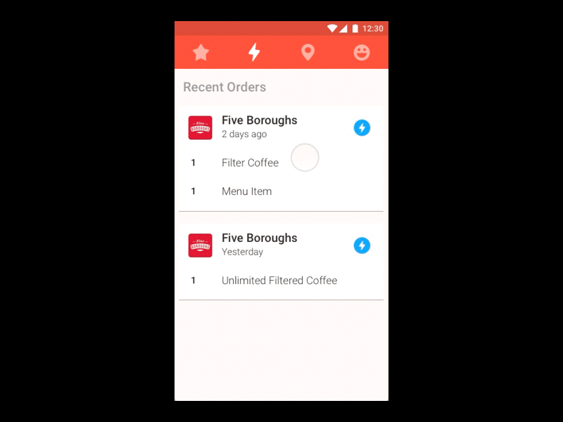
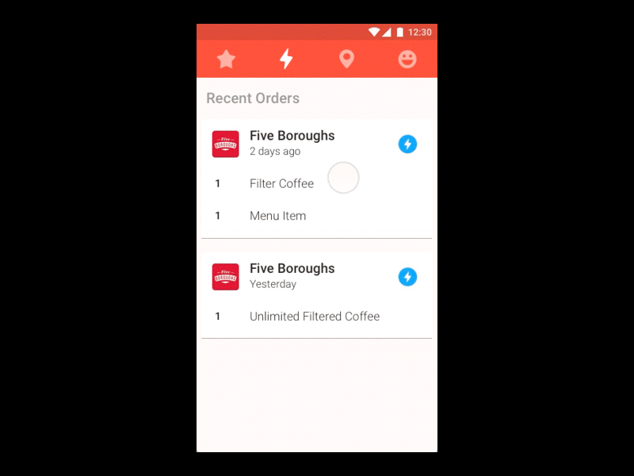

My Role
This project took place between June 2016 and January 2017. I worked as an Interaction Designer as part of the design team for PaperKite. We were responsible for all major deliverables and presenting these to the client during the course of the project. Alongside the design team was the Tech Director, Product Manager, Product Analyst and two Android developers.
Expanding on Existing Technology
The client had over fifty businesses in the hospitality industry from cocktail bars to bakeries and cafes. The challenge was to find a way to add value for these businesses as well as regular folk that would end up using the app.
After a couple of working sessions with the client we settled on a mobile ordering app. The app was to leverage Posboss’s current system for menu data and let people place an order and pay for their order through the app.
We opted to build the Minimum Viable Product (MVP) on Android and get people to participate in a pilot programme before building an iOS version. Our target audience were people who were regulars at their local cafe or eatery. We hypothesised that these were the people most likely to benefit from this app.

Industry Immersion
In order to move forward we needed a deeper understanding of the day-to-day challenges businesses in the hospitality industry faced. We spent an evening in a participating cafe acting out various scenarios in the shoes of the staff. This gave us a greater degree of empathy towards the staff and the problems they faced.
We also conducted ethnographic research throughout the project with potential users and relied heavily on our clients expert knowledge of the industry to help make decisions and prioritise features.
A Scalable System
Due to the nature of the product we were given relatively free reign when it came to visual direction. We decided to keep things simple and drew heavily from Google’s Material Design framework. We developed the product to accommodate Posboss’s existing data and gave businesses the flexibility to choose how they wanted their content displayed.
We built the design on the 8pt grid due to it’s efficiency and the fact that it’s an easy system to communicate to developers. It also provides a consistent aesthetic to other native Android apps.
The colour palette was used as a means to insert some of Posboss’s personality into the app but for the most part we wanted to give the content centre stage.
A Place for Regulars
The main tabs provide quick and easy access to favourites, recent orders and nearby venues.
Our aim for the MVP was to uncover as much usage data as we could. For example, would people rather see their favourites first or their recent orders. Ultimately it would be this kind of data that would shape future versions.
Posboss has a big network of venues and we wanted to expose these to users. We added a search and made use of user’s GPS to display nearby venues.
Menus for Venues
The menu page sits at the centre of the apps flow. We wanted to keep it clean and straightforward while giving the venue room to shine. Businesses had full control over how they wanted structure their menu with things like photos and modifiers optional and customisable.
We used skeleton screens to improve perceived performance due to the majority of content being loaded from the Posboss server and highly dependant on a person’s network speed.


 

Moving Towards Launch
When I left PaperKite, Regulr iOS had moved into the design phase and beta testing was being opened to a larger amount of people and venues. There’s still plenty of learning to be done that will help perfect this product and the findings from the public release will go a long way into shaping how this product will work in the future.
That said, the groundwork the team laid out provided Regulr with solid footing on which to move forward and change the way people ordered and paid for food. Hopefully a launch date isn’t too far off. 🤞
UPDATE Dec 2017: Both have launched and are available to the public.
Regulr on the App Store
Regulr on the Play Store
Regulr Product Page